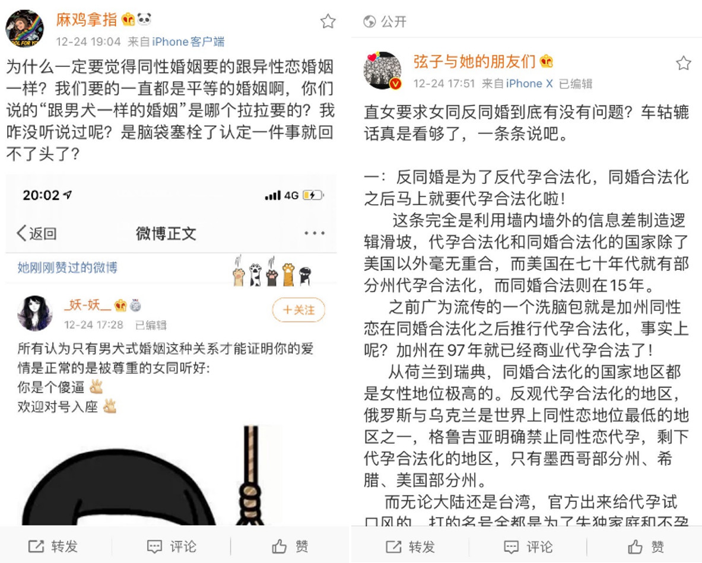
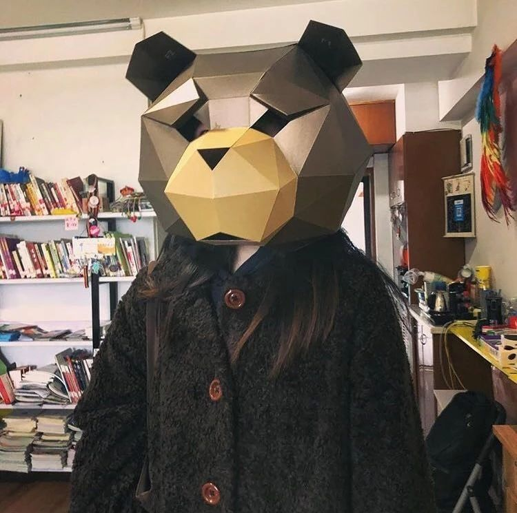

瓜瓜茶话会 | 同性婚姻平权讨论中的分裂与共谋
同性恋婚姻合法化的下一步，是否是实现代孕合法化？
最近，微博上部分女权主义者和拉拉博主就这一问题展开了广泛而激烈的讨论。
在这次讨论中，“鳄鱼毛毛“、”稍息“、”果子狸“三位博主在她们的“就是女权”茶水间的一期节目中指出，拉拉的渴婚或许是对男权婚姻的一种效仿。（微博上的视频已删除，相关博主当时的账号也被微博封号，相关视频可查看公众号”就是女权“）
同时也有博主指出，有数据证明大多数的 gay 希望代孕，甚至认为代孕是一项基本的人权，一旦同性婚姻合法化，势必会让更多的 gay 选择代孕来让自己有一个“完整的家庭”；
但”麻鸡拿指“、”小作“、”弦子与她的朋友们“等博主对上述意见表示了反对。有不同的意见认为，同性婚姻合法和代孕合法并没有什么必然且直接的联系，认为同性恋婚姻合法化的下一步是代孕合法化是一种“滑坡谬误“。

[图片来自于网络]
在这两种对立的声音之外，也有人提出了其他的看法。
例如，如果以“鳄鱼毛毛“、”稍息“、”果子狸“为代表的女权主义者和拉拉女权主义者都同在“女权”这一诉求下，那是否有可能在这一议题中寻找一个共情的方向与和解的道路？
又例如，酷儿理论也倡导“毁婚废家”，这是否与“就是女权“倡导的“反婚”有一些共同点呢？
事实上，这并不是 “同性婚姻合法化“和”代孕合法化“这两个议题间第一次出现舆论的争论，去年孙文麟在网络上发表《民法典同性婚姻立法修改意见操作指南》后，就有许多网友指出其中“暗含代孕合法化的条款“，因此引发了大量的讨论。
而在台湾同性婚姻合法化后，也有传闻称，台湾当地有 gay 群体在推动当地的代孕合法化，因此在微博上引发了质疑。
那么，关于同性婚姻我们还可以有哪些讨论呢？瓜瓜在此邀请你一同参与这场讨论。
# 【同性婚姻】主题茶话会
时间：2020 年 1 月 1 日 15:00
地点：杭州同志中心（公众号后台回复“幸福在哪里”）
报名：请点击原文链接报名参加（或者扫描文章底部二维码），本次活动免费
主持人：

青雀
女权主义者，酷儿，治疗师，关注女性、性少数、残障、儿童等多个议题

猪西西
女权行动派，性别政策研究僧
注：本次茶话会为开放式讨论，请勿预设立场，请大家做到平等讨论，禁止歧视、攻击ta人
本次讨论会我们将主要讨论的问题有：
1. 同性婚姻合法化的下一步是否是代孕合法化？
2. 如果有一天同性婚姻合法化，同性恋的婚姻模式和传统婚姻模式是否会相同/相似？
3. 婚姻制度是否会消亡？
4. ……
如果你有其它问题想要加入到这场讨论，也可以在留言告诉我们~
瓜瓜注：因为本次茶话会为免费活动，所以茶歇的预算较少，鼓励大家带零食酒水来与大家一起分享呀～
报名链接：